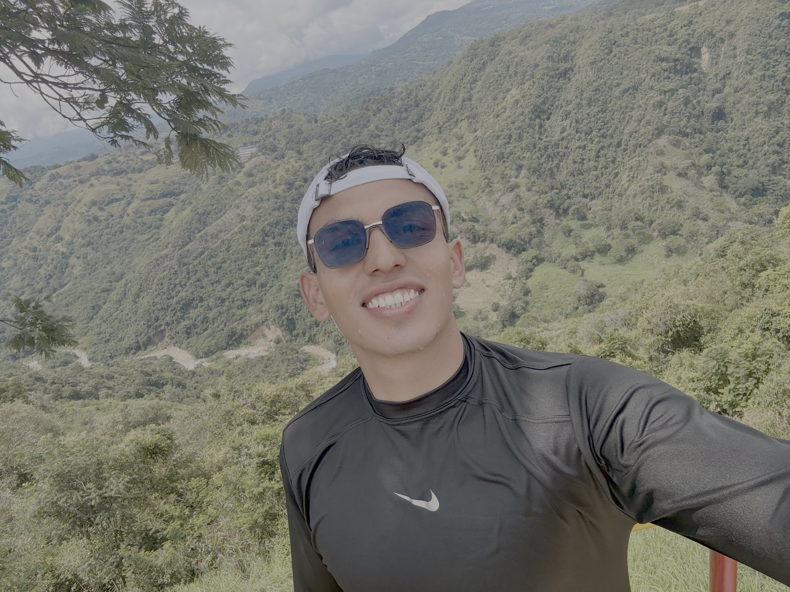

Fast-Prototyping
con IA
De la idea al prototipo en ~60 minutos. Buenas prácticas para generar productos en pocos pasos, usando Design Thinking, Prompt Engineering y un puñado de herramientas que cambiaron las reglas del juego.
De la idea al prototipo en ~60 minutos. Buenas prácticas para generar productos en pocos pasos, usando Design Thinking, Prompt Engineering y un puñado de herramientas que cambiaron las reglas del juego.

Ingeniero de Sistemas y Computación en la Universidad de los Andes, profesional de proyectos de investigación en la Facultad de Ingeniería.
Cinco pasos para no enamorarse de una solución antes de entender el problema.
Lo crearon entre Stanford y la firma IDEO en los 90. Su descubrimiento incómodo: cuando enfrentamos un problema, saltamos a la solución que ya conocemos. Por eso tantos productos no se usan.
Tuluá tiene un río. Bendición y problema. En 2011 se desbordó y dejó miles de damnificados. Hoy hay puntos críticos — basuras que tapan alcantarillas, niveles que suben de noche, contaminación aguas arriba.
La información existe. La tiene la CVC, los vecinos, ustedes. Pero está fragmentada. Vamos a unirla.

Saca el celular. Apunta al QR. Imagínate que eres un vecino del Río Tuluá. La señora que vende minutos. El estudiante que cruza en bici. El vigilante que trabaja de noche.
No tiene que ser una respuesta correcta. Tiene que ser una respuesta humana.
Una frase corta. La frustración central que ven después de leer los perfiles que la IA acaba de sintetizar. Lo más esencial, no lo más completo.
Tu idea seria. La idea más loca que se te ocurra. Y una solución NO tecnológica que también resolvería esto.
Las voy a sumar a las que genere la IA. Vamos a buscar patrones cruzados.
Ya tienen el prototipo abierto en el celular. Tóquenlo, intenten reportar algo, vean qué pasa.
Después contesten cinco preguntas cortas. Cero diplomacia: si algo está mal, díganmelo.
Programar dejándose llevar por la intuición, pidiéndole a la IA, aceptando lo que sale. Lo que acabamos de hacer en los últimos 15 minutos. Hablémoslo.